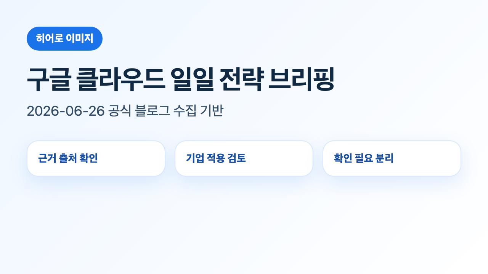
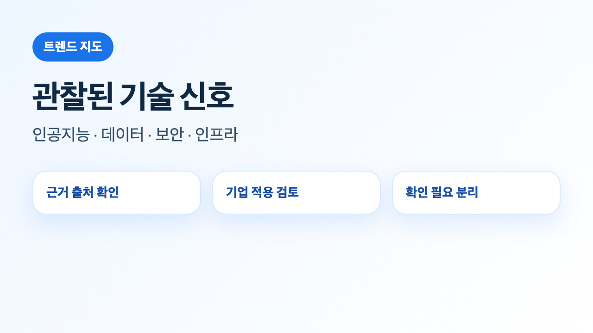
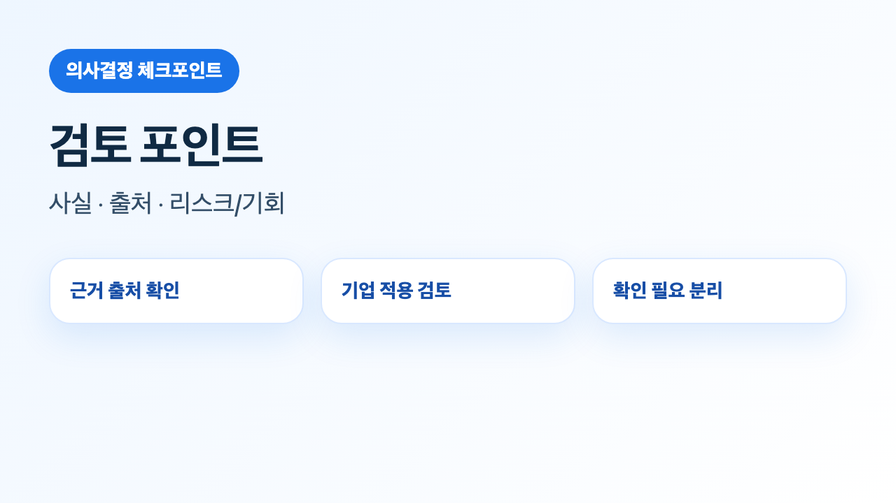

핵심 트렌드 분석
기술 변화의 의미
이번 실행에서 확인된 변화는 원문 게시물의 기능·사례·제품 표기에 한정해 해석했습니다. 데이터가 부족한 범주는 확인 필요로 분리했습니다.
기업 적용 관점
각 게시물은 도입 가능성보다 검토 조건을 먼저 확인해야 합니다. 출시 상태, 리전, 권한, 비용, 보안 통제가 핵심 확인 항목입니다.
한국 기업 관점 시사점
공식 자료가 제시한 기술·사례가 국내 규제, 데이터 위치, 보안 심사, 기존 시스템 연계 조건과 맞는지 별도 검증이 필요합니다.
수집 문서 목록
기술·서비스 관찰 표
| 분류 | 문서 제목 | 관찰된 서비스/기술 | 근거 |
|---|
실행 전략
이번 데이터만으로 도입 우선순위를 단정하지 않습니다. 필요한 실행은 원문 기능의 적용 범위 확인, 내부 보안·권한 기준 대조, 비용·운영 영향 검토, 기존 데이터·애플리케이션 아키텍처와의 적합성 확인입니다.
리스크/거버넌스 고려사항
출시 상태 리스크
일부 기능은 지역·계정·프리뷰 여부에 따라 적용 가능성이 달라질 수 있습니다.
데이터·권한 리스크
데이터 접근, 로그, 감사, 권한 분리 조건은 원문만으로 충분히 판단하기 어렵습니다.
비용 리스크
성능 개선이나 자동화 효과는 사용량, 모델, 저장·분석 규모에 따라 달라지므로 별도 산정이 필요합니다.
시사점/인사이트 리포트
이번 실행에서 신규 저장·동기화된 문서가 없어 근거 기반 인사이트를 생성하지 않았습니다.